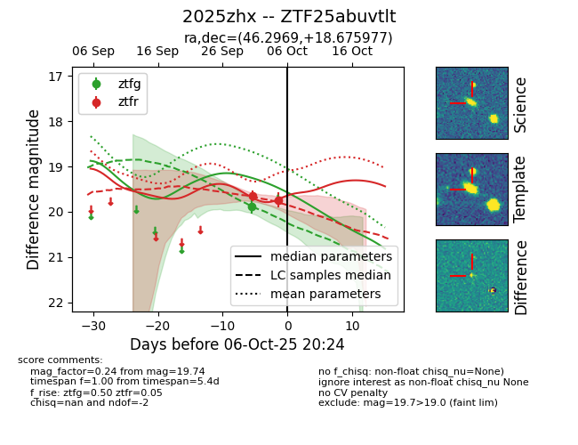
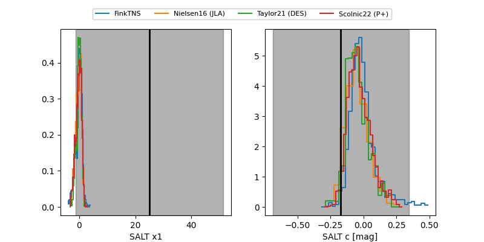

FINK: ZTF25abuvtlt
Lasair: ZTF25abuvtlt
ALeRCE: ZTF25abuvtlt
TNS: 2025zhx
YSE: 2025zhx
ZTF25abuvtlt (ztf,fink)
2025zhx (tns,yse)
equatorial (ra, dec) = (46.2969,+18.67598)
galactic (l, b) = (161.8956,-33.88757)


last ztfg=19.88, ztfr=19.74
1 ztfg, 2 ztfr detections